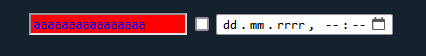

Formularze
Formularze są szeroko wykorzystywane w internecie, czy w sklepach internetowych, aby zebrać dane o użytkowniku, czy chociaż by w pasku wyszukiwania youtube, w tym artykule zajmiemy sie widoczną stroną działania takich formularzy.
Spis treści
Po co nam formualarze
Formularze są niezwykle potrzebnym elementem html, pozwalają na przepływ informacji między użytkownikiem, a serwerem (tu omówimy tylko frontend). Przykłady formularza to chociaż by miejsce w którym wybierasz płatności w sklepie internetowym, czy opcje odpowiedzi podczas testu online. HTML mówi tylko jaki typ formularza (inputu) ma być widoczny na stronie i w jaki sposób ma nim zarządzać przeglądarka (moment wysyłania danych itp.), a css określa wygląd formularza.
Podstawowe znaczniki
- <input type="button"> Zazwyczaj stosowane do wyłapywania kliknięcia w JavaScripcie, ale mogą być programowane do wykonywnia wielu innych zadań
- <input type="checkbox"> Domyślnie renderowane jako pola, które są zaznaczane po aktywacji
- <input type="color"> zapewnia element interfejsu użytkownika, który pozwala określić kolor za pomocą wizualnego interfejsu próbnika kolorów lub poprzez wprowadzenie koloru w polu tekstowym w #rrggbb.
- <input type="date"> Pozwalają wprowadzać czas (dzień miesiąc rok)
- <input type="datetime-local"> Pozwalają wprowadzać czas (dzień miesiąc rok i godzine)
- <input type="email"> Pozwala wprowadzać e-mail. Sprawdza jego poprawność (np czy zawiera @)
- <input type="file"> Pozwala przesyłać pliki do serwera, trzeba pamiętać o atrybucie post (bezpieczeństwo).
- <input type="hidden"> Stwarza ukryty input (Może być wykorzystywany do celów bezpieczeństwa)
- <input type="image"> Pozwala przesyłać zdjęcia, limituje pliki do konkretnych formatów
- <input type="month"> Pokazuje kalendarz
- <input type="number"> Pozwala wybrać numer
- <input type="password"> Input na hasło, trzeba pamiętać o metodzie post
- <input type="radio"> Są zwykle używane w grupach — zbiorach przycisków opcji opisujących zestaw powiązanych inputów.
- <input type="range"> Pozwala wybrać zakres
- <input type="reset"> Input resetujący formularz
- <input type="search"> Służy do wyszukiwania elementów (np produktów na stronie internetowej)
- <input type="submit"> Zatwierdza wybrany formularz
- <input type="tel"> Pozwala wprowadzić telefon
- <input type="text"> Pole tekstowe
- <input type="time"> Pozwala wprowadzić czas (godzine, minutę)
- <input type="url"> Pozwala wprowadzić link
- <input type="week"> Pozwla wybrać tydzień
CSS i znacznik label
Cechą inputów jest to, że każda przeglądarka, czasem nawet ta sama przeglądarka w zależności od urządzenia, wyświetla je inaczej. Tutaj z pomocą przychodzi CSS. Dla inputów ważny jest jeden sposób selekcji znaczników, a chodzi o ten:
<form method="post"> <!--wszystkie inputy powinny być umieszczane w znacnziku form -->
<input type="text">
<input type="checkbox">
<input type="datetime-local">
</form>input[type=text]{ /*oznacza to wybierz wszystkie inputy w których type=text*/
background-color: red;
color:blue;
}
Efekt:
Aby ułatwić użytkownikowi korzystanie z formualarza, możemy umieścić input w
znacnziku <label> który sprawi że miejsca powodujące kliknięcie inputu, zostana połączone z powierzchinią znacznika label.
Przykładowe użycie:
<form method="post">
<input type="text">
<label> <input type="checkbox"> po kliknięciu tego tekstu checkbox również się zaznaczy </label>
<input type="datetime-local">
</form>
label{
color: #d3d3d3; /*zmieniamy kolor textu w labelu dla lepszej czytelności*/
}A oto efekt
Bezpieczeństwo formularzy
Zapewnienie bezpieczeństwa formularzy używając samego html nie jest do końca możliwe, ale możemy wykonać pewne kroki, które to bezpieczeństwo podniosą. Są to między innymi: ustawianie metody post zamiast get w znaczniku form. Dzięki temu żądania nie będą przekazywane przez url (np. hasło nie wypisze się w pasku adresu), tylko będą wysyłane przez HTTP. Warto wykorzystać też wbudowane atrybuty walidacji HTML5, takie jak required, min, max, pattern, aby zapewnić, że dane wprowadzone przez użytkownika są w prawidłowym formacie.